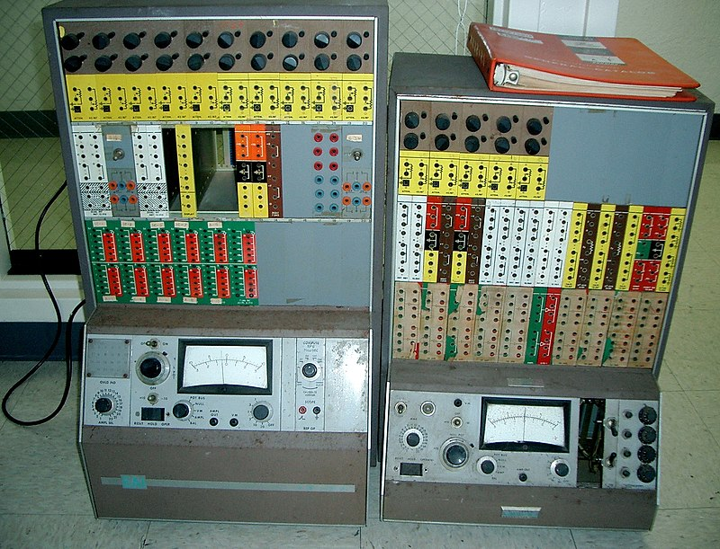

Introduccion
Desde los rudimentarios dispositivos analógicos hasta la sofisticada diversidad tecnológica actual, la evolución de los tipos de computadoras ha sido un fenómeno impresionante que ha transformado la forma en que abordamos los desafíos, tanto personales como profesionales. En estas cuartillas, exploraremos las distintas categorías de computadoras que han emergido a lo largo del tiempo, revelando cómo cada tipo ha desempeñado un papel crucial en la revolución tecnológica.

Computadoras Analógicas: Fundamentos Iniciales (Siglo XIX - Década de 1960)
El punto de partida de esta travesía se encuentra en las computadoras analógicas del siglo XIX, como la Máquina Analítica de Charles Babbage. Estos dispositivos utilizaban representaciones físicas para modelar y resolver problemas matemáticos. Aunque limitadas en comparación con las computadoras digitales modernas, las computadoras analógicas allanaron el camino para la automatización de cálculos en campos científicos y de ingeniería.
Computadoras Digitales: El Advenimiento de la Era Digital (Década de 1940 - Presente)
La transición a las computadoras digitales marcó una evolución significativa, con las primeras máquinas electrónicas, como la ENIAC, que operaban en base a dígitos binarios. Este cambio allanó el camino para las categorías más específicas de computadoras digitales, como las de propósito general, las supercomputadoras y las computadoras personales. Cada una de estas categorías ha desempeñado un papel único en la evolución de la informática.

Supercomputadoras: Potencia de Cálculo sin Límites (Década de 1960 - Presente)
Las supercomputadoras representan la búsqueda constante de aumentar la potencia de procesamiento para resolver problemas complejos. Desde el Cray-1 hasta los superordenadores actuales, estas máquinas han sido fundamentales en campos como la simulación, la investigación científica y la exploración espacial. Su capacidad para realizar cálculos a velocidades extraordinarias ha llevado a avances significativos en diversas disciplinas.

Cuarta Generación de Computadoras (1971-1980): Microprocesadores y Computadoras Personales
La década de 1970 marcó el surgimiento de las computadoras personales, transformando la informática en una herramienta accesible para el público en general. La Altair 8800 y la IBM PC son hitos notables que iniciaron la revolución del escritorio, llevando la computación desde laboratorios especializados hasta hogares y oficinas de todo el mundo. Esta categoría sigue siendo una parte integral de la vida cotidiana.

Dispositivos Móviles: Computación en Movimiento (Década de 1990 - Presente)
Con la miniaturización de componentes, surgieron los dispositivos móviles, como teléfonos inteligentes y tabletas. Estos se convirtieron en extensiones esenciales de nuestras vidas, proporcionando no solo comunicación sino también acceso a la información y servicios en cualquier lugar y momento. La movilidad y la conectividad han definido esta categoría, creando un cambio en la forma en que interactuamos con la tecnología.
Computadoras Cuánticas: Hacia Nuevas Fronteras (Década de 2000 - Presente))
En el siglo XXI, las computadoras cuánticas han emergido como una nueva frontera en la computación. Utilizando principios de la mecánica cuántica, estas máquinas tienen el potencial de realizar cálculos a velocidades que desafían la comprensión convencional. Aunque en las primeras etapas de desarrollo, las computadoras cuánticas prometen revolucionar la forma en que abordamos problemas complejos.